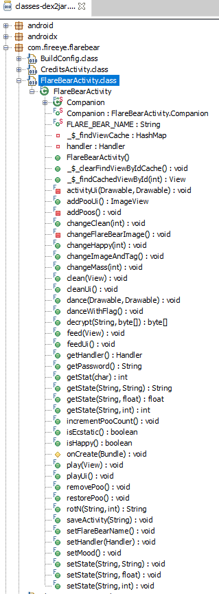
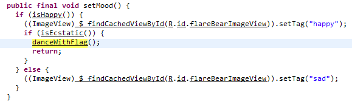
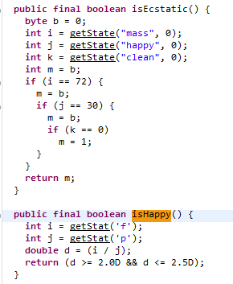
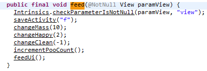
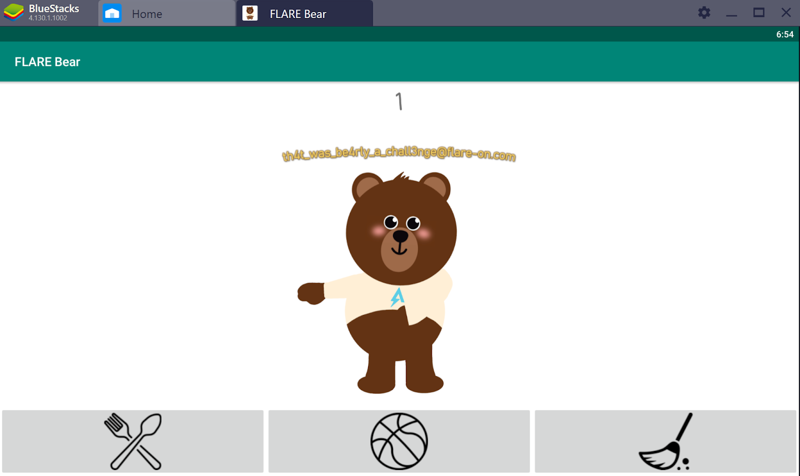

6 Oct 2019
Flare-on 2019 Challenge #3 - FlareBear
Welcome to the third Flare-on 2019 challenge write up. This time we'll be looking at an application called FlareBear, which is also the name of the challenge.
The readme that is included reads:
>We at Flare have created our own Tamagotchi pet, the flarebear. He is very fussy. Keep him alive and happy and he will give you the flag. This application is an .apk file, so we will need to download an Andorid emulator to run the application.
After downloading BlueStacks, I imported the .apk file and started the app.
Dynamic Anlaysis:
When starting Flare Bear, we get the option to create a new bear. We name our bear "1". Once started, it appears we have three buttons we can click. One of them feeds the bear, the other button allows us to play with the bear, and the other cleans up any poo. If there is no poo, we get a prompt stating there is no poo to clean. The more we feed the bear, the more he poos.
Static Analysis:
Since the file we are given is an .apk file, we can open it with an archive manager, such as 7-Zip. Inside it, we can see a classes.dex file. Once we extract this, we can use an application called dex2jar which will convert the file to a .jar file. We can decompile .jar files with JD-GUI (Java Decompiler).
Using Java Decompiler, we can see a whole host of juicy functions to set our eyes on:

The most interesting function we can turn our eyes too will be the "danceWithFlag" function. It appears this function loads the dancing animation resources, gets a password by calling the "getPassword" function, and decrypts the password.
The "getPassword" returns a string by calling "getStat" and passing the strings 'f', 'p', and 'c' to it.
Scrolling through the other functions, we can see "danceWithFlag" is called in the "setMood" function.

So it seems the return value from "isHappy" and "isEcstatic" need to be true in order for the "danceWithFlag" function to be executed.
The "isHappy" function doesn't appear to be interesting. It calls the "getStat" function with 'f' and 'p' strings, which I assume 'f' is for feed, and 'p' is for play. It then calculate the return value.
The "isEcstatic" method is the final function called before we get the flag, so we can focus on this one.

It appears the function gets the state of mass, happy, and clean and compares the values to 72, 30, and 0 respectively.
So, how do we set these values?
When looking around, I can see three functions of interest. "changeMass", "changeHappy", and "changeClean".
There are another three functions that call the above functions, which we can use to get the numbers we require. Those functions are called "feed", "play", and "clean".

The above is an example of what one of the three methods do. Going through each function, I have summarized how they each change the required property values.
feed: mass += 10 happy += 2 clean -= 1
play: mass -= 2 happy += 4 clean -= 1
clean: happy -= 1 clean += 6
So, with the help of Python, we can develop a script to help us find out how many times we need to press each button.
import random
feed_count = 0
play_count = 0
clean_count = 0
class Flare:
def __init__(self):
self.mass = 0
self.happy = 0
self.clean = 0
def do_feed(self):
self.mass += 10
self.happy += 2
self.clean -= 1
def do_play(self):
self.mass -= 2
self.happy += 4
self.clean -= 1
# need to call this function last
def do_clean(self):
self.happy -= 1
self.clean += 6
if __name__ == "__main__":
f = Flare()while True:
for i in range(random.randint(1, 20)):
f.do_feed()
feed_count+=1
for i in range(random.randint(1, 20)):
f.do_play()
play_count+=1
for i in range(random.randint(1, 20)):
f.do_clean()
clean_count+=1
if f.mass==72 and f.happy==30 and f.clean==0:
print("Mass: {}, Happy: {}, Clean: {}".format(f.mass, f.happy, f.clean))
print(feed_count, play_count, clean_count)
break
else:
f.mass = 0
f.happy = 0
f.clean = 0
feed_count = 0
play_count = 0
clean_count = 0The output is the following:
Mass: 72, Happy: 30, Clean: 0
8 4 2If we click the feed button 8 times, the play button 4 times and the clean button 2 times, we reveal the flag!
